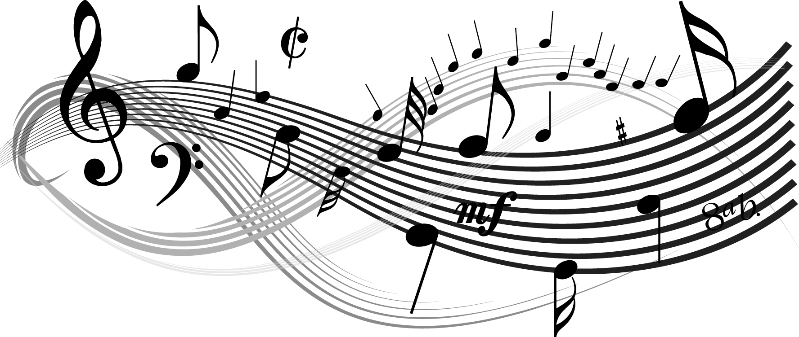
基礎樂理介紹
現在播放的是 : 貝多芬-小提琴 & 鋼琴奏鳴曲第５號『春』-第２樂章
*請將游標移到圖片上方*
譜號 : 譜號是用來定義音符所在的音樂位置範圍
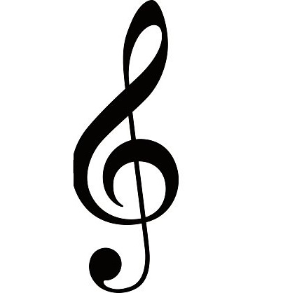 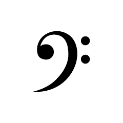音符 : 以全音符為四拍為例，二分音符為4/2(2)拍，以此類推
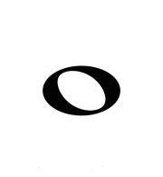 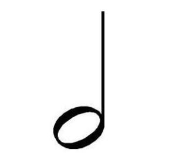 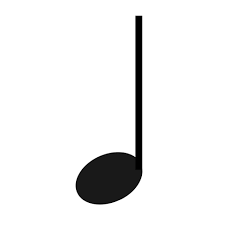 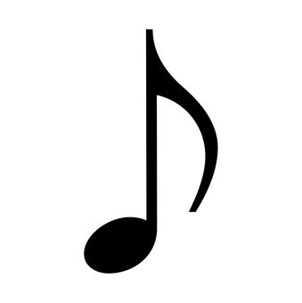休止符 : 以全休止符為停四拍為例，二分休止符為停(4/2)2拍，以此類推
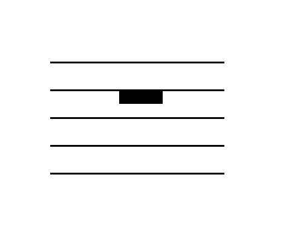 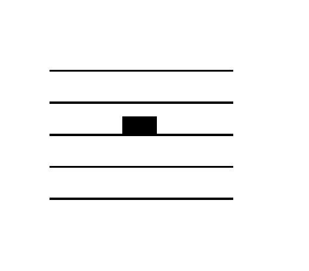 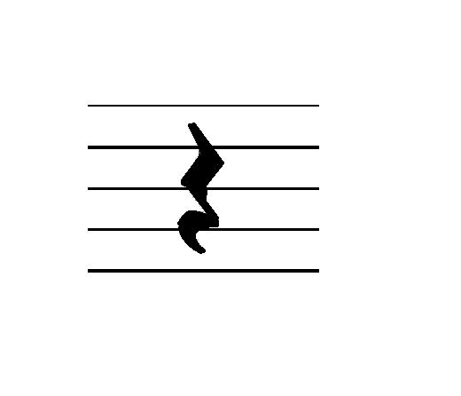 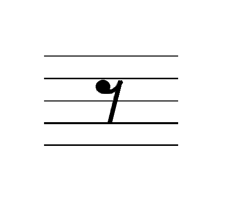拍號
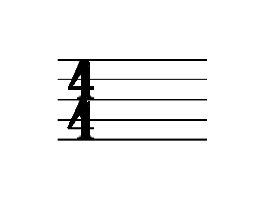以圖片中四四拍為例，上面的4指的是每小節4拍，而下面的4指的是以四分音符為一拍，以此類推。
升、降記號 : 升記號為升高半音，降記號為降低半音，還原記號是將同一小節原本升或降的音還原
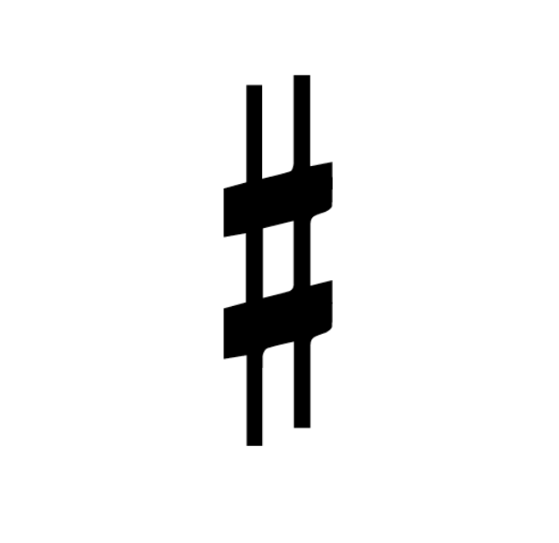 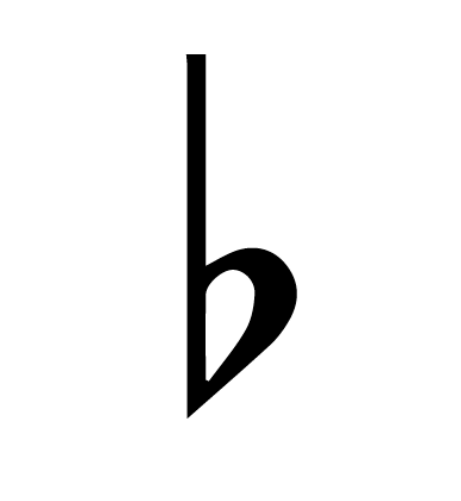 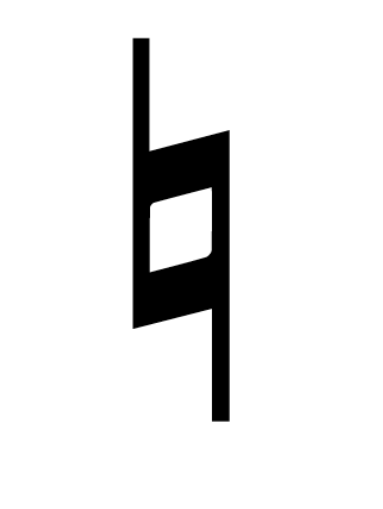音名、唱名 : 音名及唱名的對應
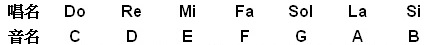音階
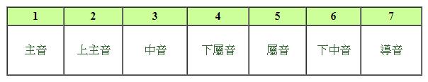- 七聲音階分為兩種
- 大調 : 除3、4&7、1為半音，其餘為全音
- 小調 : 除2、3&5、6為半音，其餘為全音
- For Example:
- C大調 C-D-E-F-G-A-B-C
- G大調 G-A-B-C-D-E-F#-G
- F大調 F-G-A-Bb-C-D-E-F
- a小調 a-b-c-d-e-f-g-a
- c小調 c-d-eb-f-g-ab-bb-c
大調音階中排列規則為 : 全全半全全全半
小調音階中排列規則為 : 全半全全半全全
反覆記號 : 介紹幾種較為常見的反覆記號
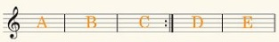演奏順序:A-B-C-A-B-C-D-E
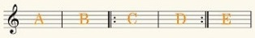演奏順序:A-B-C-D-C-D-E
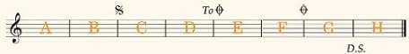演奏順序:A-B-C-D-E-F-G-C-D-G-H
口語稱Segno為"跳蚤" Coda為"烏龜"
結語
以上所教各位的樂理是入門的基礎，樂理有如音樂之文法，內容非常的廣且深，
有興趣學習如何作曲者，樂理是不可或缺的知識，乏味是無可避免的，也希望大家都能在音樂的世界中徜徉著。
P.S 如果你都學會了，不妨去玩一下小測驗~別擔心，都有小提示喔~~~